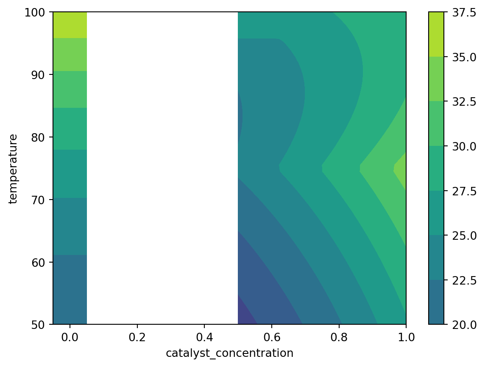

from bofire.data_models.constraints.api import NonZeroCondition
from bofire.data_models.domain.api import Domain
from bofire.data_models.features.api import ContinuousInput, ContinuousOutput
from bofire.data_models.kernels.api import RBFKernel, WedgeKernel
catalyst_domain = Domain.from_lists(
inputs=[
ContinuousInput(key="temperature", unit="°C", bounds=(50.0, 100.0)),
ContinuousInput(key="catalyst_concentration", unit="M", bounds=(0.2, 1.0), allow_zero=True),
],
outputs=[ContinuousOutput(key="yield")],
)
indicator_kernel = WedgeKernel(
base_kernel=RBFKernel(),
conditions=[
("catalyst_concentration", "catalyst_concentration", NonZeroCondition())
],
)Conditional Features
When optimizing chemical processes, we often have some inputs that are dependent on others. For example, the value of a catalyst_concentration input feature is only relevant depending on another feature use_catalyst==True. Whilst it may seem that use_catalyst==False is equivalent to just setting catalyst_concentration==0, there may be some limitations to this approach: - If a catalyst is used, there may be some minimum amount required. It is difficult to model the disjoint bounds of a continuous feature. - It may be the case that some tiny presence of catalyst enables a side reaction that completely changes the reaction. We therefore have a step change at 0, with smoother behaviour everywhere else in the domain, which Gaussian process surrogates cannot model well.
For a some examples of literature on these problems, see [Swersky2014Arc] and [Horn2019Wedge].
[Swersky2014Arc] Swersky et al. 2014, “Raiders of the Lost Architecture: Kernels for Bayesian Optimization in Conditional Parameter Spaces” arXiv [Horn2019Wedge] Horn et al. “Surrogates for hierarchical search spaces: the wedge-kernel and an automated analysis”, GECCO
We consider a test problem as described above, where we wish to optimize the yield of a reaction by controlling the temperature and catalyst concentration.
After defining the domain, we can then build the wedge kernel for our GP surrogate.
from bofire.data_models.kernels.api import RBFKernel, WedgeKernel
# here, we manually build the list of conditions
# in future we will automatically build them from any inputs with allow_zero==True
conditions = [
(
"catalyst_concentration",
"catalyst_concentration",
NonZeroCondition(),
)
]
wedge_kernel_data_model = WedgeKernel(
base_kernel=RBFKernel(),
conditions=conditions,
)import torch
import bofire.kernels.api as kernels
def features_to_idx_mapper(feats: list[str]) -> list[int]:
return catalyst_domain.inputs.get_feature_indices({}, feats)
wedge_kernel = kernels.map(
wedge_kernel_data_model,
batch_shape=torch.Size([]),
active_dims=list(range(2)),
features_to_idx_mapper=features_to_idx_mapper,
)# cast the return type from `kernels.map` to the wedge kernel
# this fixes syntax highlighting in this notebook
from typing import cast
from bofire.kernels.conditional import WedgeKernel as WedgeKernelFunctional
wedge_kernel = cast(WedgeKernelFunctional, wedge_kernel)
wedge_kernelWedgeKernel(
(raw_lengthscale_constraint): Positive()
(raw_angle_constraint): Interval(1.000E-04, 9.999E-01)
(raw_radius_constraint): Positive()
(base_kernel): RBFKernel(
(raw_lengthscale_constraint): Positive()
)
)We check below that the kernel behaves as expected. Specifically, we want to check that the indicator function correctly masks the conditional feature to be inactive when the condition is not met.
# check the order of dimensions in X
assert features_to_idx_mapper(["catalyst_concentration", "temperature"]) == [0, 1]
X = torch.tensor(
[
[0.0, 0.0],
[0.05, 0.0],
[0.50, 0.6],
]
)
# the indicator function shows which dimensions are active
# X[:, 1] should always be active
# X[:, 0] should only be active if X[:, 0] != 0
wedge_kernel.indicator_func(X)tensor([[False, True],
[ True, True],
[ True, True]])Using the wedge kernel for Bayesian optimizaiton
Using the domain defined at the start of the notebook, we now create a benchmark that we can use to evaluate how well this kernel works for Bayesian optimization.
We set up our objective function such that adding a catalyst enables a side reaction, and so any small prescence of the catalyst hurts yield. However, at higher concentration of catalyst, we see improved performance.
Increasing temperature increases the yield, however it also causes decomposition of the catalyst at high temperatures.
import numpy as np
import pandas as pd
from bofire.benchmarks.api import Benchmark
class ReactionOptimizationBenchmark(Benchmark):
_domain = catalyst_domain
def _f(self, X: pd.DataFrame, **kwargs) -> pd.DataFrame: # type: ignore
cat_conc = X["catalyst_concentration"]
temp = X["temperature"]
norm_temp = (temp - 50) / 50
side_product = np.where(cat_conc > 0.0, 10.0, 0.0)
effective_catalyst = np.clip(cat_conc - 1.5 * (norm_temp - 0.5), 0.0, cat_conc)
catalyst_effect = 10 * np.exp(effective_catalyst)
temperature_effect = 10 * np.exp(norm_temp)
y = temperature_effect + catalyst_effect - side_product
Y = pd.DataFrame({"yield": y, "valid_yield": 1})
return Y
benchmark = ReactionOptimizationBenchmark()First, we plot the objective function:
import matplotlib.pyplot as plt
N_grid_pts = 50
# plot active points
X_c, X_t = np.meshgrid(
np.linspace(0.5, 1.0, num=N_grid_pts), np.linspace(50, 100, num=N_grid_pts)
)
grid_X = np.stack((X_c.flatten(), X_t.flatten()), axis=-1)
grid_Y = benchmark.f(
pd.DataFrame(data=grid_X, columns=["catalyst_concentration", "temperature"])
)["yield"].to_numpy()
plt.contourf(X_c, X_t, grid_Y.reshape(N_grid_pts, N_grid_pts), vmin=10, vmax=40)
# plot inactive points
X_c, X_t = np.meshgrid(
np.linspace(-0.05, 0.05, num=2), np.linspace(50, 100, num=N_grid_pts)
)
grid_X = np.stack((0.0 * X_c.flatten(), X_t.flatten()), axis=-1)
grid_Y = benchmark.f(
pd.DataFrame(data=grid_X, columns=["catalyst_concentration", "temperature"])
)["yield"].to_numpy()
plt.contourf(X_c, X_t, grid_Y.reshape(N_grid_pts, 2), vmin=10, vmax=40)
plt.colorbar()
plt.xlabel("catalyst_concentration")
plt.ylabel("temperature")Text(0, 0.5, 'temperature')
import bofire.strategies.api as strategies
from bofire.data_models.strategies.api import RandomStrategy, SoboStrategy
samples = strategies.map(RandomStrategy(domain=catalyst_domain, seed=0)).ask(10)
# RandomStrategy doesn't currently support randomly sampling with allow_zero
# So we manually set the first 2 reactions to have no catalyst.
samples.loc[:1, "catalyst_concentration"] = 0.0
experiments = benchmark.f(samples, return_complete=True)
experiments.head(4)| catalyst_concentration | temperature | yield | valid_yield | |
|---|---|---|---|---|
| 0 | 0.000000 | 59.171060 | 22.013203 | 1 |
| 1 | 0.000000 | 74.864291 | 26.442524 | 1 |
| 2 | 0.297314 | 92.215550 | 23.263744 | 1 |
| 3 | 0.406463 | 75.872417 | 21.404513 | 1 |
from bofire.data_models.surrogates.api import BotorchSurrogates, SingleTaskGPSurrogate
sobo_strategy_data_model = SoboStrategy(
domain=catalyst_domain,
seed=1,
surrogate_specs=BotorchSurrogates(
surrogates=[
SingleTaskGPSurrogate(
inputs=catalyst_domain.inputs,
outputs=catalyst_domain.outputs,
kernel=wedge_kernel_data_model,
)
]
),
)
strategy = strategies.map(sobo_strategy_data_model)strategy.tell(experiments, replace=True)/opt/hostedtoolcache/Python/3.12.12/x64/lib/python3.12/site-packages/bofire/surrogates/botorch.py:181: UserWarning:
The given NumPy array is not writable, and PyTorch does not support non-writable tensors. This means writing to this tensor will result in undefined behavior. You may want to copy the array to protect its data or make it writable before converting it to a tensor. This type of warning will be suppressed for the rest of this program. (Triggered internally at /pytorch/torch/csrc/utils/tensor_numpy.cpp:213.)
We would expect the proposed batch to include some experiments with no catalyst, and some with a catalyst. Note that the volume of the search space with catalyst is larger, so we may also expect more experiments with the feature active.
strategy.ask(5)| catalyst_concentration | temperature | yield_pred | yield_sd | yield_des | |
|---|---|---|---|---|---|
| 0 | 0.879064 | 58.272164 | 30.348520 | 2.268980 | 30.348520 |
| 1 | 1.000000 | 52.791915 | 29.597457 | 2.717546 | 29.597457 |
| 2 | 0.000000 | 98.016863 | 27.366467 | 3.418722 | 27.366467 |
| 3 | 0.200000 | 50.000000 | 26.529353 | 3.517021 | 26.529353 |
| 4 | 1.000000 | 72.902802 | 31.034578 | 0.717393 | 31.034578 |